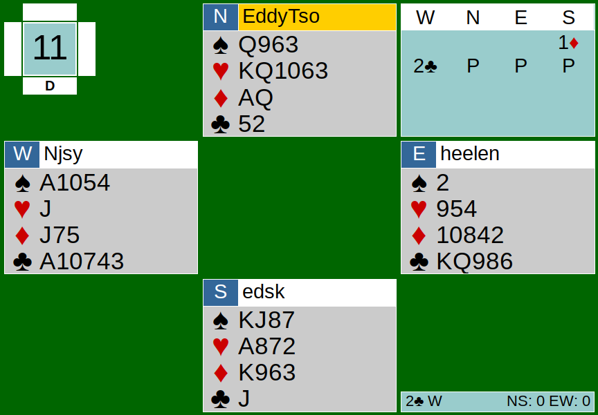
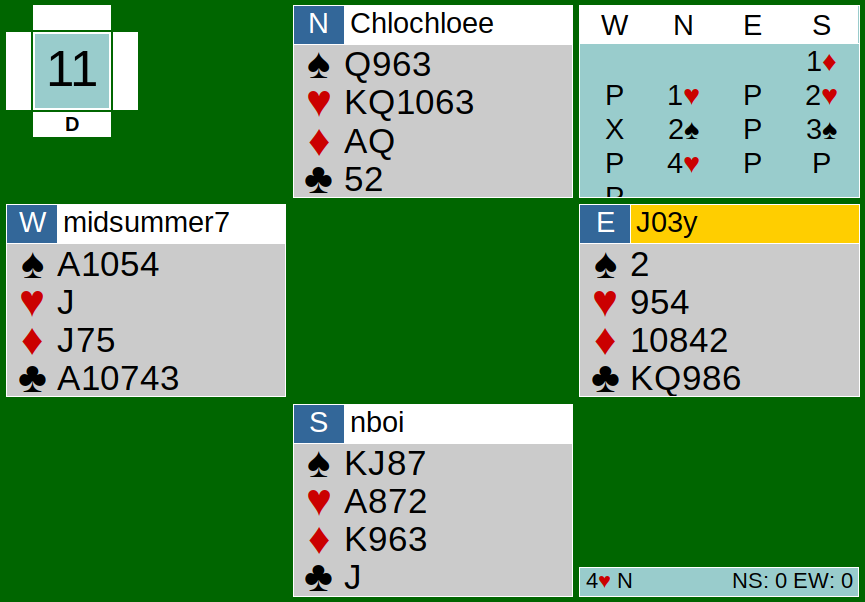

June 20th’s game was something new. I decided to switch some of the partnerships up, giving some players new experiences. It turned out to be just as fun as playing with our regular partners, and the new partnerships created stronger bonds. Today, let’s take a glimpse of how the team game went with the newly-formed partnerships by analyzing Board 11 from June 20th’s team game.


Both tables’ auctions start off with a diamond opening by South. At Team Ice’s (Edmond and Eddy’s) table, West makes an overcall of 2C, holding 5 clubs in a 5-4-3-1 shape. When one overcalls on the two-level, generally one should have a 6-card suit. After the 2C overcall, North, with 13 points, passes. North should not have passed because North knows that NS belongs in game somewhere, as South showed an opening hand. It would have been best if North had bid 2H, allowing NS to find their heart fit. Unfortunately for NS, the overcall by West possibly discouraged them to bid higher.
Over at Team Fire’s (Nathan and Chloe’s) table, West passed after the 1D opening; NS found their 9-card heart and 8-card spade fits much easier. North correctly bids her longer major suit (1H) and South smoothly raises to 2H. West doubles here, which I am assuming is takeout, as West only holds 10 points and a singleton heart. I feel like it is too late in the bidding to get partner to respond to the takeout double, but it ended up not affecting anything because NS already found their solid heart fit, and North would go to 4H regardless of what the opponents bid. So that’s what North did: North simply bid 4H. The takeaway here is to realize when you should bid on. At Team Ice’s table, North should have known that they had at least game and bid on after the overcall. In the end, both tables’ contracts belonged to Team Fire.
2C by West at Team Ice’s table played out fairly well for EW. North chose to lead the A from AQ of diamonds, which was questionable.
Opening lead review: When you lead an Ace or any honor, that card must be from top of a sequence (two honor sequence in suits or three honor sequences in NT). The opening lead can also be from top of a doubleton or a singleton. One may also lead fourth best, meaning leading the fourth card in your longest and strongest suit. Of course, there can be other lead agreements, but leading from top of sequences, fourth best, top of doubletons, and singletons are pretty standard.
EW ended up losing 1 heart and 3 diamonds. 2C+1 yields 110 points for Team Fire in this table.
At the other table, West made the opening lead of the King of clubs from KQxxx. Since this is a suit contract, you may lead from a two honor sequence (vs. leading from 3 honor sequence in NT). This was a pretty reasonable lead. To take the first three tricks, instead of leading another small club to partner after winning with the King of clubs, West could have led his singleton spade. East may take it with the Ace of spade and lead a small spade back. West can now rough East’s spade to win their third trick. The “perfect” way to defend this contract would have been to lead the singleton spade and have East win it with the Ace. East must lead a spade back to West, even when East sees that there are spade honors on the board. West would ruff and probably lead the King of clubs from KQxxx. Now, East must cover the King (or whatever club West chooses to lead back after ruffing) with the Ace in order for West to ruff another spade. Finding this pathway is unlikely, but it would allow EW to take the first 4 tricks, setting their contract. EW would take the first trick with the Ace of spades, then the second trick with a spade ruff, the Ace of clubs in the West, and another spade ruff. Because West led another club giving South a ruff, NS was able to take 11 tricks after drawing trump and only losing to the Ace of spades and the Ace of clubs. These scores resulted in a 10 IMP swing for Team Fire.
Link to hands: https://webutil.bridgebase.com/v2/tview.php?t=6172-1592694243&u=heelen